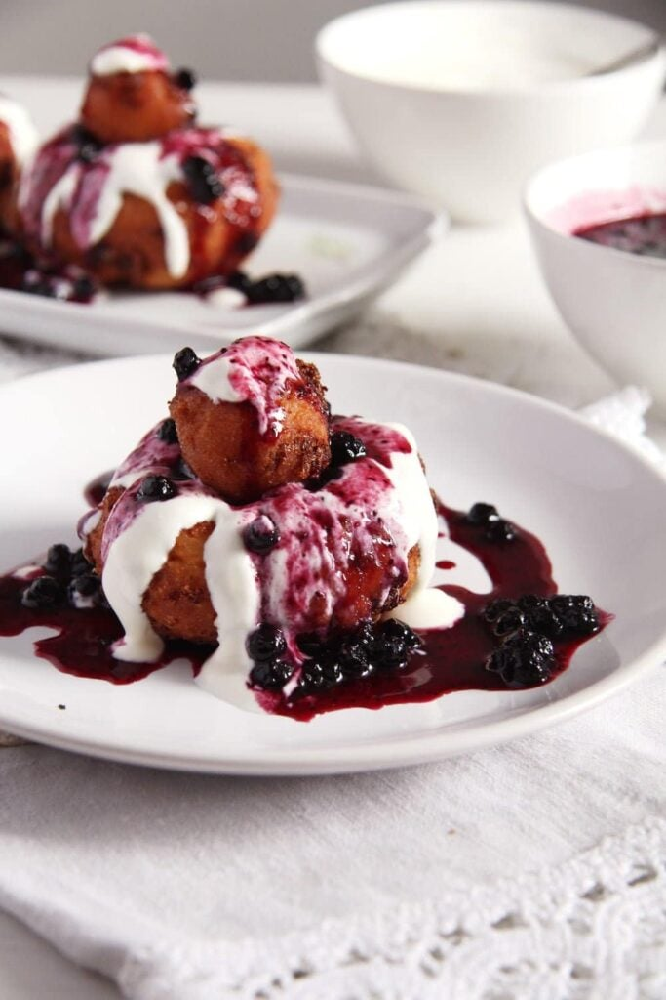

PAPANASI RECIPE
HOMEPAGE

They are a typical Romanian dessert, basically cheese doughnuts. There are two kinds of Romanian fried doughnuts: fried or boiled papanasi.
Both kinds are made with the Romanian branza de vaci, which means cow's cheese. Branza de vaci is a fresh kind of cheese, low in fat, and high in protein. It has a soft consistency and a mild and fresh taste. It is similar to cottage cheese, but a little milder I would say.
However, branza de vaci is a typical Romanian product, something that I cannot buy in Germany.
Ingredients:
- 500 g cottage cheese 1.1 lbs/ 2 ¼ cups
- 2 eggs
- 75 g granulated sugar 2.6 oz/ ⅓ + 1 tablespoon
- 1 sachet vanilla sugar
- 1 teaspoon baking soda
- 230-250 g all-purpose flour 8.1 - 8.8 oz / about 2 cups
- cooking oil for frying the doughnuts
- 250 g smetana or crème fraiche to serve, 8.8 oz/ about 1 cup
- whole fruit runny blueberry jam to serve or sour cherry, blackberry, black currants jam etc
Steps:
- Dough Mix about 230 g/ 8.1 oz of the flour and the baking soda and add them to the cheese mixture. Mix with a spoon. Flour the working surface and your hands generously. Turn the dough onto the floured surface and knead it lightly to form a ball. The dough should still be somewhat sticky yet manageable. Add the remaining flour only if absolutely necessary, only if the dough sticks so much that you will not be able to work it at all.
- Form donuts Divide the dough into 9 balls. Roll 8 of the balls into thick sausages and unite the sausage ends to get a circle with a hole in the middle. Use the last ball to make 8 little balls, which will be used to top the papanasi.
- Fry Only fry two or three papanasi at a time, depending on the size of your pan, do not overcrowd the pan; the papanasi should be able to move around freely.
Turn the heat down to medium-low. Turn the doughnuts with a slotted spoon a few times in between and fry until the papanasi are golden brown.
It took me about 5 to 7 minutes for one batch, but keep a close look and take them out as soon as they have a nice golden color. Or leave them longer if necessary. The little balls will need less time, about 3-4 minutes or so.
- Serve warm topped with smetana and blueberry jam. Place the little balls on top and top them with a bit of smetana and jam as well.